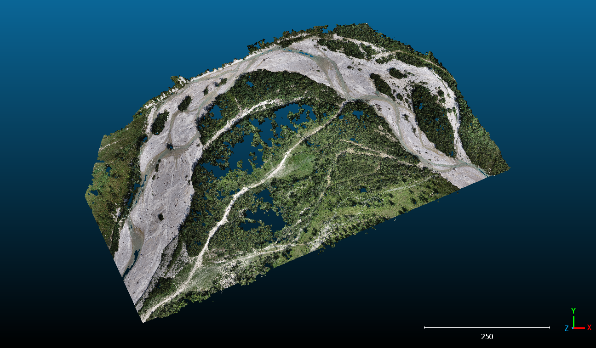
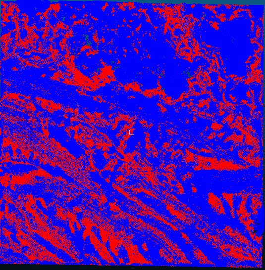

Overview
- Goal – Classify topographic change along the Isar River (erosion, deposition, vegetation change, stable) instead of just “change / no-change”.
- Data – Two epochs of UAV photogrammetry and TLS point clouds with M3C2-derived change metrics.
- Workflow – Cylindrical sampling + geometric features → Encoder-Fusion Siamese KPConv + DeepCluster → clusters mapped to geomorphic classes.
- Result – Produced binary change/no-change maps and 4-class maps (erosion, deposition, vegetation change, stable/no-change) that reveal subtle erosion–deposition patterns and improve interpretability for river monitoring.

Data & Preprocessing
- Two epochs of 3D point clouds from UAV photogrammetry and Terrestrial Laser Scanning.
- M3C2-based change metrics used as reference for binary change/no-change masks.
- Cylindrical sampling of the scene into local 3D neighborhoods for training.
- Hand-crafted geometric features (planarity, omnivariance, height rank, etc.).
Method
- Encoder-Fusion Siamese KPConv network for learning 3D embeddings of before/after point clouds.
- DeepCluster-style loop to cluster embeddings and refine pseudo-labels.
- Post-processing and mapping of clusters to geomorphic classes (erosion, deposition, vegetation change, stable).
Results
The workflow outputs both binary change/no-change maps and 4-class geomorphic maps (erosion, deposition, vegetation change, stable/no-change). These multi-class maps highlight subtle erosion and deposition patterns beyond the binary change mask, revealing spatially coherent geomorphic units and demonstrating how unsupervised 3D deep learning can support river monitoring without dense manual labels.
